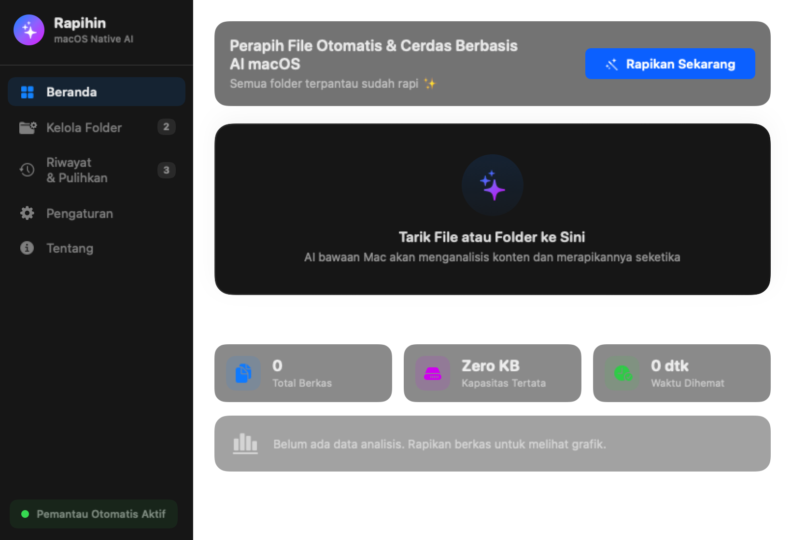
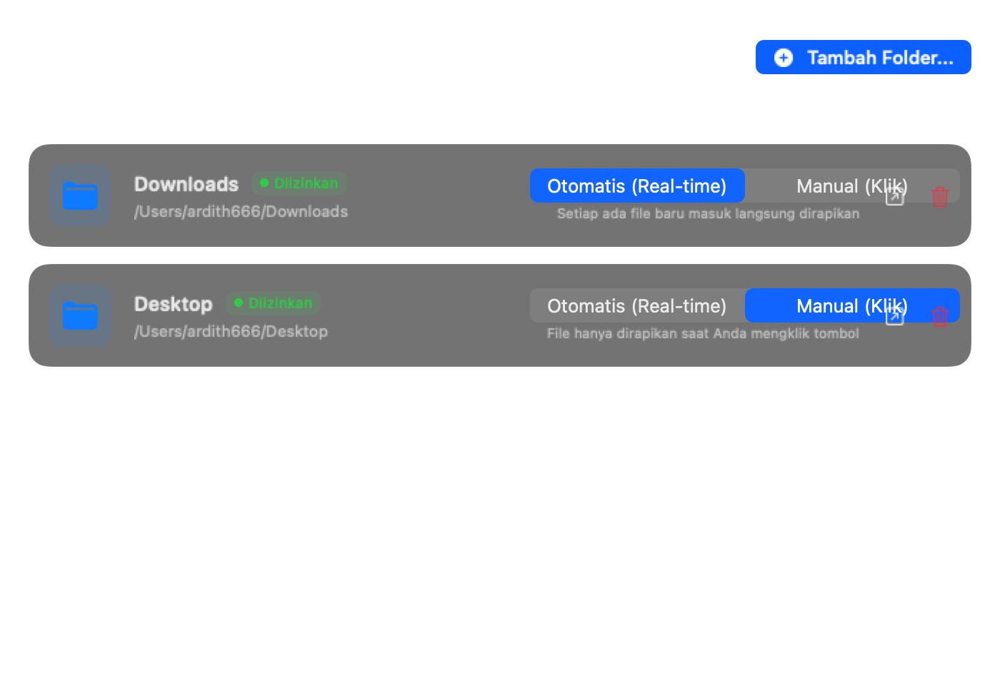
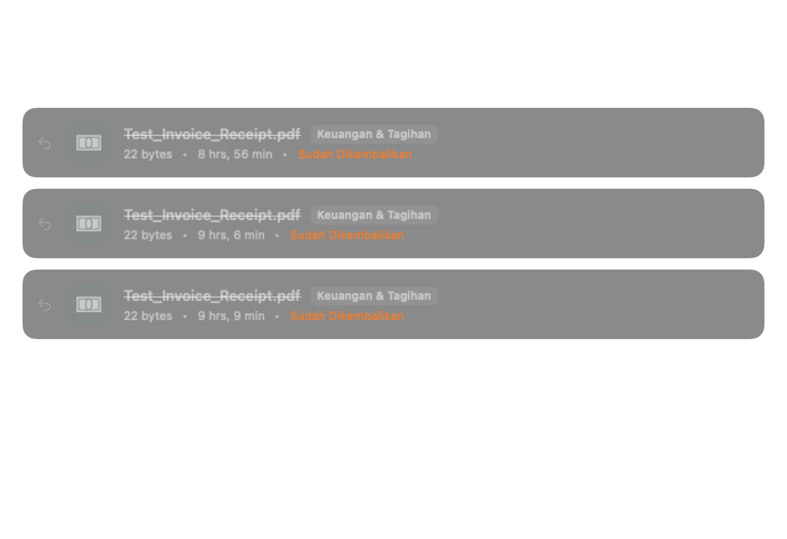
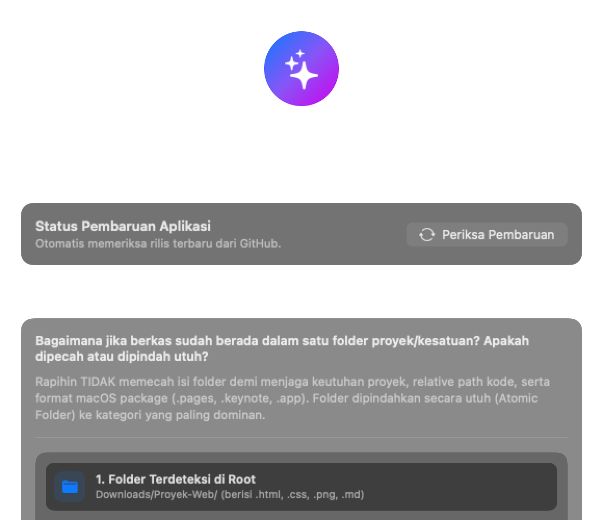
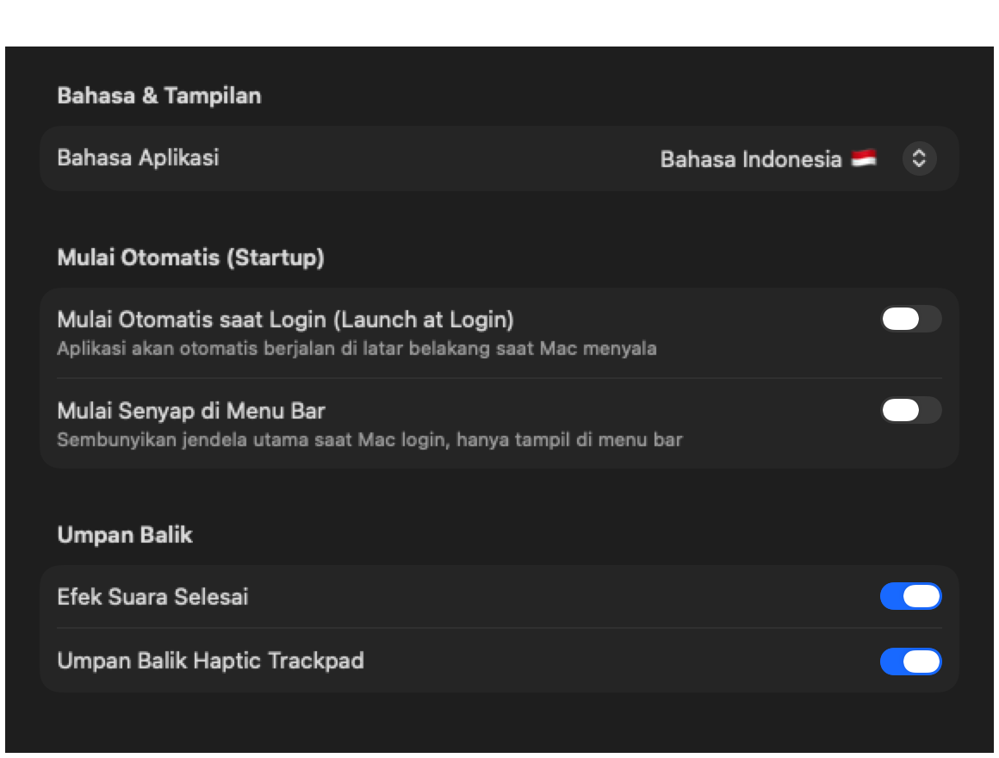
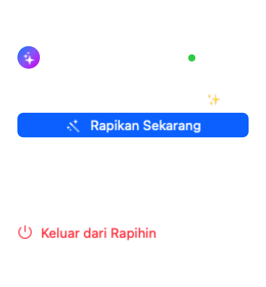

UKURAN MINI
Bukan Pembobol RAM
Nggak perlu install Ollama atau download model 4GB–16GB. Binary cuma ~1.4MB dan konsumsi memori idle cuma ~40MB.
Aplikasi macOS ultra-ringan (~1.4MB) yang memanfaatkan Apple Intelligence, Vision OCR, & NaturalLanguage bawaan macOS. Merapikan berkas langsung di tempat tanpa mengunduh model LLM 8GB yang bikin kipas MacBook meraung.
brew install --cask ardith666/tap/rapihin
Nggak perlu install Ollama atau download model 4GB–16GB. Binary cuma ~1.4MB dan konsumsi memori idle cuma ~40MB.
File di Downloads tetap di Downloads, file di Desktop tetap di Desktop. Dikelompokkan ke subfolder kategori di dalamnya tanpa dilempar ke folder lain.
Folder proyek kode, album foto, atau bundle macOS (.app, .pages) tidak akan dipecah. Dipindahkan secara utuh (Atomic Move) ke kategori yang sesuai.
Dibangun murni dengan SwiftUI modern, responsif 120fps ProMotion, dan hemat baterai tanpa runtime electron.

Tarik berkas atau folder apa pun langsung ke zona drop. Dasbor menyajikan 3 kartu KPI real-time serta visualisasi grafik distribusi kategori berkas yang berhasil dirapikan.

Atur folder mana saja yang ingin dipantau. Pilih mode Otomatis agar setiap ada file baru masuk langsung dirapikan seketika, atau Manual sesuai kendali Anda.

Salah rapikan file? Jangan panik. Rapihin mencatat setiap pemindahan dalam jurnal lokal yang bisa dibatalkan kapan saja.

Dilengkapi dengan pemeriksa versi rilis GitHub secara langsung, catatan rilis (changelog), serta diagram alur mengapa Rapihin tidak pernah memecah isi folder proyek.

Pengaturan native macOS yang rapi dan intuitif. Jalankan senyap saat Mac menyala dan pilih bahasa favorit Anda.
SMAppService macOS
Rapihin hidup senyap di Menu Bar Anda. Cukup satu klik untuk merapikan semua folder seketika atau membuka jendela utama.
Banyak file organizer sembarangan memecah isi folder sehingga proyek web (HTML/CSS/JS) atau dokumen package macOS (.pages, .keynote, .app) jadi rusak total. Rapihin menerapkan pendekatan Atomic Folder Move:
Misal: Downloads/Proyek-Web/ yang berisi berkas kode, style, dan aset gambar.
AI memindai isi internal dan menentukan bahwa mayoritas konteks adalah Code & Projects.
Dipindahkan ke Downloads/Code/Proyek-Web/. Struktur berkas di dalamnya 100% aman!
| Kriteria | Aplikasi AI Berat Lainnya | Rapihin.app ✨ |
|---|---|---|
| Ukuran Aplikasi & Model | 4GB – 16GB (Harus download LLM) | ~1.4 MB (Zero model download) |
| Konsumsi RAM Idle | 1.5GB – 4GB+ (Ollama / Llama.cpp) | ~40 MB (Hemat baterai) |
| Lokasi Pemindahan File | Sering dilempar ke folder luar | In-Place (Tetap di folder asalnya) |
| Penanganan Folder Proyek | Dipecah-pecah (proyek rusak) | Atomic (Dipindah utuh tanpa rusak) |
| Privasi & Keamanan Data | Sebagian mengirim telemetri / cloud | 100% On-Device (Offline aman) |
Cukup jalankan satu baris perintah di Terminal macOS Anda untuk mengunduh dan memasang Rapihin secara otomatis.
brew install --cask ardith666/tap/rapihin
Formula resmi: ardith666/homebrew-tap/Casks/rapihin.rb
.crdownload (Chrome), .download (Safari), atau .part otomatis diabaikan, dan sistem menunggu hingga aktivitas penulisan berkas selesai seutuhnya sebelum merapikannya.